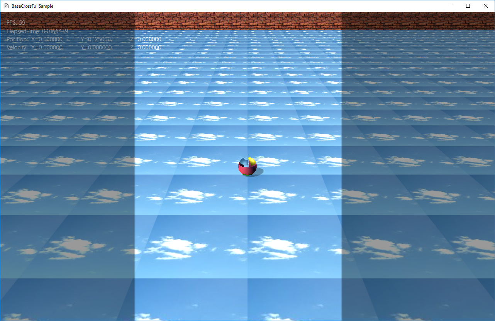

図0408a
両脇を暗くマスキング処理をしています。Bボタンでマスクが外れます。
void MaskSprite::OnDraw() {
auto Dev = App::GetApp()->GetDeviceResources();
auto pID3D11DeviceContext = Dev->GetD3DDeviceContext();
auto RenderStatePtr = Dev->GetRenderState();
pID3D11DeviceContext->OMSetBlendState(RenderStatePtr->GetAlphaBlendEx(), nullptr, 0xffffffff);
pID3D11DeviceContext->OMSetDepthStencilState(RenderStatePtr->GetDepthNone(), 0);
pID3D11DeviceContext->RSSetState(RenderStatePtr->GetCullNone());
ID3D11SamplerState* pSampler = nullptr;
pSampler = RenderStatePtr->GetLinearClamp();
pID3D11DeviceContext->PSSetSamplers(0, 1, &pSampler);
//シェーダの設定
//頂点シェーダ
pID3D11DeviceContext->VSSetShader(VSPCTSprite::GetPtr()->GetShader(), nullptr, 0);
//インプットレイアウトの設定
pID3D11DeviceContext->IASetInputLayout(VSPCTSprite::GetPtr()->GetInputLayout());
//ピクセルシェーダ
pID3D11DeviceContext->PSSetShader(PSPCTSprite::GetPtr()->GetShader(), nullptr, 0);
//個別処理
SpriteConstants sb;
//コンスタントバッファの作成
//行列の取得
auto PtrTrans = GetComponent<Transform>();
//行列の定義
bsm::Mat4x4 World;
World = PtrTrans->Get2DWorldMatrix();
//エミッシブ
sb.Emissive = Col4(0,0,0,1);
//デフィーズはすべて通す
sb.Diffuse = Col4(1, 1, 1, 1);
//行列の設定
sb.World = World;
//テクスチャ
auto shTex = App::GetApp()->GetResource<TextureResource>(m_TextureKey);
pID3D11DeviceContext->PSSetShaderResources(0, 1, shTex->GetShaderResourceView().GetAddressOf());
//コンスタントバッファの更新
pID3D11DeviceContext->UpdateSubresource(CBSprite::GetPtr()->GetBuffer(), 0, nullptr, &sb, 0, 0);
//コンスタントバッファの設定
ID3D11Buffer* pConstantBuffer = CBSprite::GetPtr()->GetBuffer();
//頂点シェーダに渡す
pID3D11DeviceContext->VSSetConstantBuffers(0, 1, &pConstantBuffer);
//ピクセルシェーダに渡す
pID3D11DeviceContext->PSSetConstantBuffers(0, 1, &pConstantBuffer);
//ストライドとオフセット
UINT stride = m_SpriteMesh->GetNumStride();
UINT offset = 0;
//描画方法のセット
pID3D11DeviceContext->IASetPrimitiveTopology(m_SpriteMesh->GetPrimitiveTopology());
//頂点バッファのセット
pID3D11DeviceContext->IASetVertexBuffers(0, 1, m_SpriteMesh->GetVertexBuffer().GetAddressOf(), &stride, &offset);
//インデックスバッファのセット
pID3D11DeviceContext->IASetIndexBuffer(m_SpriteMesh->GetIndexBuffer().Get(), DXGI_FORMAT_R16_UINT, 0);
//描画
pID3D11DeviceContext->DrawIndexed(m_SpriteMesh->GetNumIndicis(), 0, 0);
//後始末
Dev->InitializeStates();
}
SetDrawLayer(2);